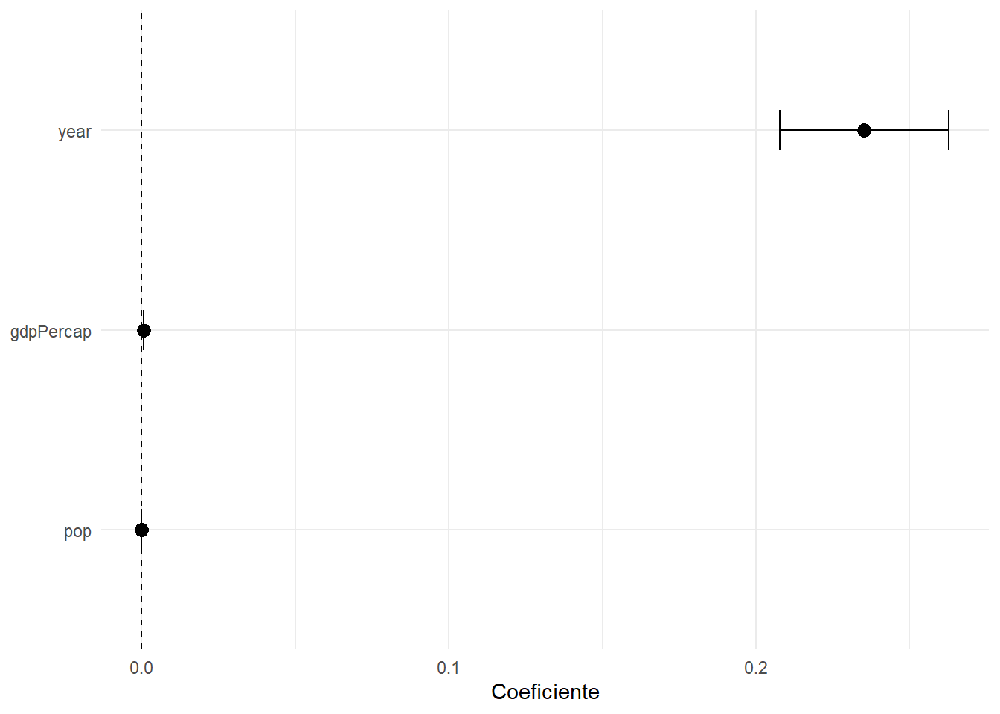
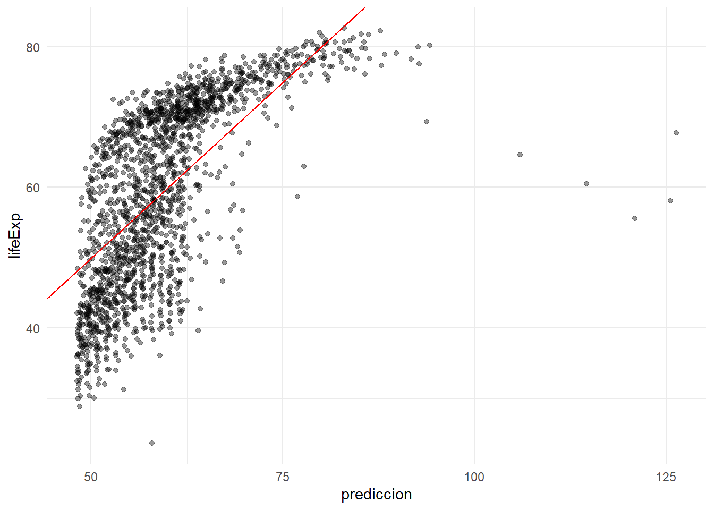

library(tidyverse)
library(modelsummary)
library(gt)
library(broom)
library(gapminder)
library(knitr)
library(here)30 Presentación de modelos con Quarto
Objetivos de aprendizaje
Al finalizar este capítulo, el lector será capaz de:
- Transformar resultados estadísticos en tablas científicas reproducibles.
- Presentar modelos econométricos utilizando formatos profesionales.
- Comparar múltiples modelos dentro de una misma tabla.
- Generar gráficos de coeficientes y efectos.
- Exportar resultados a HTML, PDF y Word utilizando Quarto.
- Aplicar buenas prácticas de comunicación científica reproducible.
30.1 Introducción
Construir un buen modelo estadístico constituye únicamente una parte del proceso de investigación. Un modelo correctamente especificado pierde valor si sus resultados no son comunicados adecuadamente.
En la práctica científica moderna, la reproducibilidad exige que las tablas, figuras e interpretaciones sean generadas automáticamente a partir del código utilizado en el análisis (Xie et al., 2024).
El objetivo de este capítulo consiste en mostrar cómo transformar resultados estadísticos en productos científicos listos para publicación utilizando Quarto.
30.2 Configuración inicial
30.2.1 Carga de librerías
30.2.2 Carga de datos
Utilizaremos la base gapminder, ampliamente utilizada en cursos de análisis de datos y econometría aplicada.
data(
"gapminder",
package = "gapminder"
)
datos_modelos <- gapminder30.2.3 Exploración inicial
glimpse(
datos_modelos
)Rows: 1,704
Columns: 6
$ country <fct> "Afghanistan", "Afghanistan", "Afghanistan", "Afghanistan", …
$ continent <fct> Asia, Asia, Asia, Asia, Asia, Asia, Asia, Asia, Asia, Asia, …
$ year <int> 1952, 1957, 1962, 1967, 1972, 1977, 1982, 1987, 1992, 1997, …
$ lifeExp <dbl> 28.801, 30.332, 31.997, 34.020, 36.088, 38.438, 39.854, 40.8…
$ pop <int> 8425333, 9240934, 10267083, 11537966, 13079460, 14880372, 12…
$ gdpPercap <dbl> 779.4453, 820.8530, 853.1007, 836.1971, 739.9811, 786.1134, …Interpretación
La base contiene información socioeconómica de múltiples países y años, lo que permite ilustrar distintas estrategias de presentación de modelos.
30.3 De la salida de R al reporte científico
30.3.1 Ajustando un modelo
modelo_1 <- lm(
lifeExp ~ gdpPercap,
data = datos_modelos
)30.3.2 Resultados básicos
broom::tidy(
modelo_1
) |>
kable(
digits = 4,
caption = "Resultados básicos del modelo"
)| term | estimate | std.error | statistic | p.value |
|---|---|---|---|---|
| (Intercept) | 53.9556 | 0.315 | 171.2902 | 0 |
| gdpPercap | 0.0008 | 0.000 | 29.6577 | 0 |
Interpretación
La tabla presenta coeficientes, errores estándar, estadísticos t y valores p. Aunque contiene toda la información necesaria, su formato todavía no corresponde al estándar utilizado en publicaciones científicas.
30.4 Tablas profesionales con modelsummary
El paquete modelsummary permite transformar modelos en tablas listas para artículos científicos (Arel-Bundock, 2022).
modelsummary(
modelo_1,
stars = TRUE,
title = "Modelo de esperanza de vida"
)| (1) | |
|---|---|
| + p < 0.1, * p < 0.05, ** p < 0.01, *** p < 0.001 | |
| (Intercept) | 53.956*** |
| (0.315) | |
| gdpPercap | 0.001*** |
| (0.000) | |
| Num.Obs. | 1704 |
| R2 | 0.341 |
| R2 Adj. | 0.340 |
| AIC | 12850.4 |
| BIC | 12866.7 |
| Log.Lik. | -6422.205 |
| F | 879.577 |
| RMSE | 10.49 |
Interpretación
La tabla presenta automáticamente:
- Coeficientes.
- Errores estándar.
- Significancia estadística.
- Número de observaciones.
- Estadísticos de ajuste.
30.5 Personalizando tablas
modelsummary(
modelo_1,
stars = TRUE,
statistic = "std.error",
gof_omit = "IC|Log|F",
title = "Modelo lineal simple"
)| (1) | |
|---|---|
| + p < 0.1, * p < 0.05, ** p < 0.01, *** p < 0.001 | |
| (Intercept) | 53.956*** |
| (0.315) | |
| gdpPercap | 0.001*** |
| (0.000) | |
| Num.Obs. | 1704 |
| R2 | 0.341 |
| R2 Adj. | 0.340 |
| RMSE | 10.49 |
Interpretación
La personalización permite adaptar las tablas a los requisitos editoriales de revistas científicas.
30.6 Comparación de modelos
Uno de los escenarios más frecuentes consiste en comparar especificaciones alternativas.
30.6.1 Construcción de modelos
modelo_2 <- lm(
lifeExp ~ gdpPercap + year,
data = datos_modelos
)
modelo_3 <- lm(
lifeExp ~ gdpPercap + year + pop,
data = datos_modelos
)30.6.2 Comparación conjunta
modelsummary(
list(
"Modelo 1" = modelo_1,
"Modelo 2" = modelo_2,
"Modelo 3" = modelo_3
),
stars = TRUE,
title = "Comparación de modelos"
)| Modelo 1 | Modelo 2 | Modelo 3 | |
|---|---|---|---|
| + p < 0.1, * p < 0.05, ** p < 0.01, *** p < 0.001 | |||
| (Intercept) | 53.956*** | -418.424*** | -411.450*** |
| (0.315) | (27.617) | (27.666) | |
| gdpPercap | 0.001*** | 0.001*** | 0.001*** |
| (0.000) | (0.000) | (0.000) | |
| year | 0.239*** | 0.235*** | |
| (0.014) | (0.014) | ||
| pop | 0.000** | ||
| (0.000) | |||
| Num.Obs. | 1704 | 1704 | 1704 |
| R2 | 0.341 | 0.437 | 0.440 |
| R2 Adj. | 0.340 | 0.437 | 0.439 |
| AIC | 12850.4 | 12581.9 | 12575.7 |
| BIC | 12866.7 | 12603.7 | 12602.9 |
| Log.Lik. | -6422.205 | -6286.971 | -6282.869 |
| F | 879.577 | 661.436 | 445.560 |
| RMSE | 10.49 | 9.69 | 9.66 |
Interpretación
La comparación simultánea permite evaluar cambios en:
- Magnitud de coeficientes.
- Significancia estadística.
- Capacidad explicativa.
30.7 Extrayendo información para reportes
En ocasiones es necesario construir tablas personalizadas.
broom::tidy(
modelo_3,
conf.int = TRUE
) |>
kable(
digits = 4,
caption = "Coeficientes e intervalos de confianza"
)| term | estimate | std.error | statistic | p.value | conf.low | conf.high |
|---|---|---|---|---|---|---|
| (Intercept) | -411.4501 | 27.6662 | -14.8719 | 0.0000 | -465.7134 | -357.1867 |
| gdpPercap | 0.0007 | 0.0000 | 27.5292 | 0.0000 | 0.0006 | 0.0007 |
| year | 0.2354 | 0.0140 | 16.8120 | 0.0000 | 0.2079 | 0.2628 |
| pop | 0.0000 | 0.0000 | 2.8643 | 0.0042 | 0.0000 | 0.0000 |
Interpretación
Los intervalos de confianza complementan la información proporcionada por los valores p.
30.8 Visualización de coeficientes
Las tablas son útiles, pero los gráficos permiten comunicar resultados de manera más intuitiva.
coeficientes_plot <- broom::tidy(
modelo_3,
conf.int = TRUE
)ggplot(
coeficientes_plot |>
filter(
term != "(Intercept)"
),
aes(
x = estimate,
y = reorder(term, estimate)
)
) +
geom_point(
size = 3
) +
geom_errorbarh(
aes(
xmin = conf.low,
xmax = conf.high
),
height = 0.2
) +
geom_vline(
xintercept = 0,
linetype = "dashed"
) +
theme_minimal() +
labs(
x = "Coeficiente",
y = NULL
)
Interpretación
El gráfico facilita la comparación visual de magnitudes e intervalos de confianza.
30.9 Predicciones para comunicar resultados
La presentación moderna de resultados suele incorporar predicciones.
predicciones <- datos_modelos |>
mutate(
prediccion = predict(
modelo_3
)
)ggplot(
predicciones,
aes(
x = prediccion,
y = lifeExp
)
) +
geom_point(
alpha = 0.4
) +
geom_abline(
slope = 1,
intercept = 0,
color = "red"
) +
theme_minimal()
Interpretación
Cuanto más cercanos se encuentren los puntos a la diagonal, mejor será el ajuste del modelo.
30.10 Exportación automática con Quarto
Una ventaja fundamental de Quarto consiste en que el mismo código genera múltiples formatos de salida (Allaire et al., 2024).
format:
html:
toc: true
pdf:
toc: true
docx:
toc: trueInterpretación
Un único archivo fuente permite producir simultáneamente:
- Artículos web.
- Informes PDF.
- Documentos Word.
30.11 Tablas compatibles con Word, PDF y HTML
Para maximizar compatibilidad se recomienda:
kable()o
modelsummary()Estas herramientas generan resultados estables en todos los formatos de salida.
30.12 Buenas prácticas de reporte reproducible
30.12.1 Recomendaciones
- No copiar tablas manualmente.
- Generar todas las tablas desde código.
- Utilizar etiquetas consistentes.
- Documentar cada modelo.
- Mantener interpretaciones junto a resultados.
- Evitar editar resultados fuera de Quarto.
- Utilizar un único flujo reproducible.
30.13 Flujo recomendado
Datos
↓
Modelo
↓
Tabla
↓
Figura
↓
Interpretación
↓
Documento final30.14 Manos a la obra
- Ajuste un modelo lineal.
- Genere una tabla con modelsummary.
- Compare tres especificaciones alternativas.
- Construya un gráfico de coeficientes.
- Genere predicciones.
- Compare valores observados y predichos.
- Renderice el documento en HTML.
- Renderice el documento en PDF.
- Renderice el documento en Word.
- Verifique que los resultados sean idénticos en todos los formatos.
30.15 Resumen del capítulo
En este capítulo aprendimos a transformar resultados estadísticos en productos científicos reproducibles utilizando Quarto. Se mostraron estrategias para construir tablas profesionales, comparar modelos, visualizar coeficientes y exportar resultados a múltiples formatos de salida. Estas herramientas constituyen la base para la elaboración de artículos científicos, tesis e informes técnicos reproducibles.